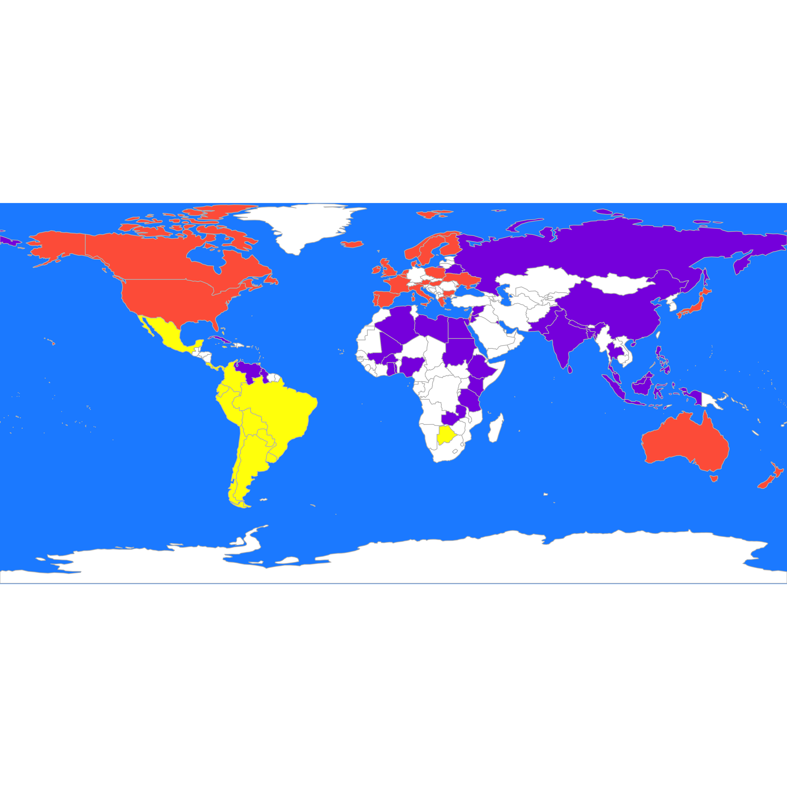
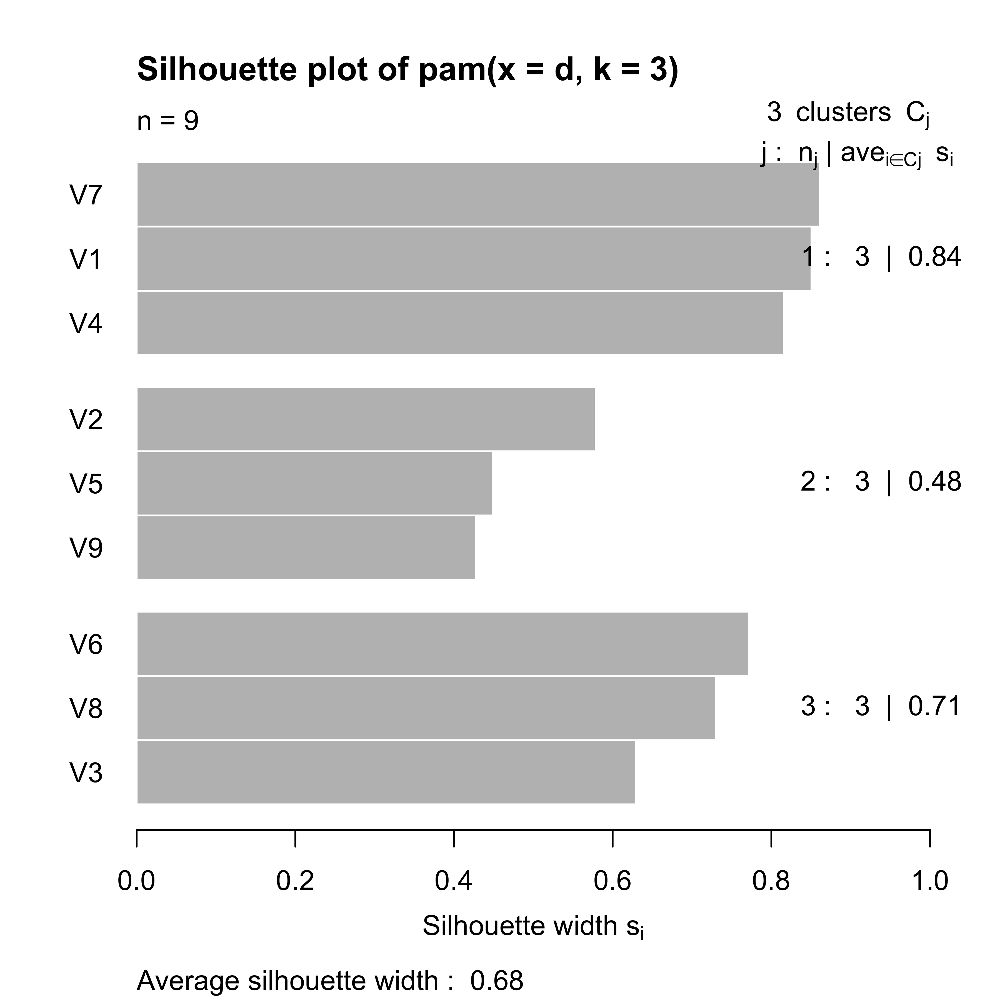

X <- read.table(file = "data/unvotes.csv", sep = ",", row.names = 1, header = TRUE)
X2 <- X[complete.cases(X), ]21 Clustering
A large class of unsupervised learning methods is collectively called clustering. The objective can be described as identifying different groups of observations that are closer to each other (“clustered”) than to those of the other groups. The data consist of n observations \(X_1\), \(X_2\), …, \(X_n\), each with p features. In general, the number of groups is unknown and needs to be determined from the data.
In this course we will discuss both model-free and model-based clustering methods. In the first group we will present K-means (and other related methods), and hierarchical (agglomerative) clustering methods. Model-based clustering is based on the assumption that the data is a random sample, and that the distribution of the vector of features X is a combination of different distributions (technically: a mixture model). In the latter case, for observations belonging to a group, the vector X is assumed to have a distribution in a specific (generally parametric) family. Some of these model-based methods treat the group labels as missing (unobserved) responses, and rely on the assumed model to infer those missing labels.
21.1 K-means, K-means++, K-medoids
Probably the most intuitive and easier to explain unsupervised clustering algorithm is K-means (and its variants K-means++ and K-medoids, a.k.a. pam, partition around medoids). The specifics of the K-means algorithm were discussed in class. Here we will illustrate its use on a few examples.
21.1.1 UN votes example.
These data contain the historical voting patterns of United Nations members. More details can be found here at (Voeten, Strezhnev, and Bailey 2009). The UN was founded in 1946 and it contains 193 member states. The data include only “important” votes, as classified by the U.S. State Department. The votes for each country were coded as follows: Yes (1), Abstain (2), No (3), Absent (8), Not a Member (9). There were 368 important votes, and 77 countries voted in at least 95% of these. We focus on these UN members. Our goal is to explore whether voting patterns reflect political alignments, and also whether countries vote along known political blocks. Our data consists of 77 observations with 368 variables each. More information on these data can be found here.
The dataset is organized by vote (resolution), one per row, and its columns contain the corresponding vote of each country (one country per column). We first read the data, and limit ourselves to resolutions where every country voted without missing votes:
We now compute a K-means partition using the function kmeans with K = 5, and look at the resulting groups:
set.seed(123)
b <- kmeans(t(X2), centers = 5, iter.max = 20, nstart = 1)
table(b$cluster)
#>
#> 1 2 3 4 5
#> 26 2 15 9 25If we run kmeans again, we might get a different partition:
b <- kmeans(t(X2), centers = 5, iter.max = 20, nstart = 1)
table(b$cluster)
#>
#> 1 2 3 4 5
#> 27 13 12 5 20It is better to consider a large number of random starts and take the best found solution (what does best mean in this context? in other words, how does the algorithm decide which one is the solution it should return?)
# Take the best solution out of 1000 random starts
b <- kmeans(t(X2), centers = 5, iter.max = 20, nstart = 1000)
split(colnames(X2), b$cluster)
#> $`1`
#> [1] "Algeria" "Bangladesh" "Belarus"
#> [4] "Brunei.Darussalam" "China" "Cuba"
#> [7] "Egypt" "India" "Indonesia"
#> [10] "Kuwait" "Libya" "Malaysia"
#> [13] "Pakistan" "Russian.Federation" "Sudan"
#> [16] "Syrian.Arab.Republic" "Venezuela"
#>
#> $`2`
#> [1] "Bolivia" "Botswana" "Burkina.Faso"
#> [4] "Ecuador" "Ethiopia" "Ghana"
#> [7] "Guyana" "Jamaica" "Jordan"
#> [10] "Kenya" "Mali" "Nepal"
#> [13] "Nigeria" "Philippines" "Singapore"
#> [16] "Sri.Lanka" "Tanzania" "Thailand"
#> [19] "Togo" "Trinidad.and.Tobago" "Zambia"
#>
#> $`3`
#> [1] "Argentina" "Bahamas" "Brazil" "Chile" "Colombia"
#> [6] "Costa.Rica" "Mexico" "Panama" "Paraguay" "Peru"
#> [11] "Uruguay"
#>
#> $`4`
#> [1] "Australia" "Austria" "Belgium" "Bulgaria" "Canada"
#> [6] "Cyprus" "Denmark" "Finland" "France" "Greece"
#> [11] "Hungary" "Iceland" "Ireland" "Italy" "Japan"
#> [16] "Luxembourg" "Malta" "Netherlands" "New.Zealand" "Norway"
#> [21] "Poland" "Portugal" "Spain" "Sweden" "UK"
#> [26] "Ukraine"
#>
#> $`5`
#> [1] "Israel" "USA"It may be better to look at the groups on a map:
library(rworldmap)
library(countrycode)
these <- countrycode(colnames(X2), "country.name", "iso3c")
malDF <- data.frame(country = these, cluster = b$cluster)
# malDF is a data.frame with the ISO3 country names plus a variable to merge to
# the map data
# This line will join your malDF data.frame to the country map data
malMap <- joinCountryData2Map(malDF, joinCode = "ISO3", nameJoinColumn = "country")
#> 77 codes from your data successfully matched countries in the map
#> 0 codes from your data failed to match with a country code in the map
#> 166 codes from the map weren't represented in your data
# colors()[grep('blue', colors())] fill the space on the graphical device
par(mai = c(0, 0, 0, 0), xaxs = "i", yaxs = "i")
mapCountryData(malMap, nameColumnToPlot = "cluster", catMethod = "categorical", missingCountryCol = "white",
addLegend = FALSE, mapTitle = "", colourPalette = c("darkgreen", "hotpink", "tomato",
"blueviolet", "yellow"), oceanCol = "dodgerblue")
We can compare this partition with the one we obtain using PAM (K-medoids), which is implemented in the function pam of the package cluster. Recall from the discussion in class that pam does not need to manipulate the actual observations, only its pairwise distances (or dissimilarities). In this case we use Euclidean distances, but it may be interesting to explore other distances, particulary in light of the categorical nature of the data. Furthermore, to obtain clusters that may be easier to interpret we use K = 3:
library(cluster)
# Use Euclidean distances
d <- dist(t(X))
# what happens with missing values?
set.seed(123)
a <- pam(d, k = 3)Compare the resulting groups with those of K-means:
b <- kmeans(t(X2), centers = 3, iter.max = 20, nstart = 1000)
table(a$clustering)
#>
#> 1 2 3
#> 26 24 27
table(b$cluster)
#>
#> 1 2 3
#> 16 28 33An better visualization is done using the map. interesting We plot the 3 groups found by pam on the map, followed by those found by K-means:
these <- countrycode(colnames(X), "country.name", "iso3c")
malDF <- data.frame(country = these, cluster = a$clustering)
malMap <- joinCountryData2Map(malDF, joinCode = "ISO3", nameJoinColumn = "country")
#> 77 codes from your data successfully matched countries in the map
#> 0 codes from your data failed to match with a country code in the map
#> 166 codes from the map weren't represented in your data
par(mai = c(0, 0, 0, 0), xaxs = "i", yaxs = "i")
mapCountryData(malMap, nameColumnToPlot = "cluster", catMethod = "categorical", missingCountryCol = "white",
addLegend = FALSE, mapTitle = "", colourPalette = c("darkgreen", "hotpink", "tomato",
"blueviolet", "yellow"), oceanCol = "dodgerblue")
these <- countrycode(colnames(X2), "country.name", "iso3c")
malDF <- data.frame(country = these, cluster = b$cluster)
malMap <- joinCountryData2Map(malDF, joinCode = "ISO3", nameJoinColumn = "country")
#> 77 codes from your data successfully matched countries in the map
#> 0 codes from your data failed to match with a country code in the map
#> 166 codes from the map weren't represented in your data
par(mai = c(0, 0, 0, 0), xaxs = "i", yaxs = "i")
mapCountryData(malMap, nameColumnToPlot = "cluster", catMethod = "categorical", missingCountryCol = "white",
addLegend = FALSE, mapTitle = "", colourPalette = c("yellow", "tomato", "blueviolet"),
oceanCol = "dodgerblue")
What if we use the L_1 norm instead?
d <- dist(t(X), method = "manhattan")
set.seed(123)
a <- pam(d, k = 3)
these <- countrycode(colnames(X), "country.name", "iso3c")
malDF <- data.frame(country = these, cluster = a$clustering)
malMap <- joinCountryData2Map(malDF, joinCode = "ISO3", nameJoinColumn = "country")
#> 77 codes from your data successfully matched countries in the map
#> 0 codes from your data failed to match with a country code in the map
#> 166 codes from the map weren't represented in your data
par(mai = c(0, 0, 0, 0), xaxs = "i", yaxs = "i")
mapCountryData(malMap, nameColumnToPlot = "cluster", catMethod = "categorical", missingCountryCol = "white",
addLegend = FALSE, mapTitle = "", colourPalette = c("darkgreen", "hotpink", "tomato",
"blueviolet", "yellow"), oceanCol = "dodgerblue")
As mentioned before, since the data set does not include a true label, the comparison between the different results is somewhat subjective, and it often relies on the knowledge of the subject matter experts. In our example above, this would mean asking the opinion of a political scientist as to whether these groupings correspond to known international political blocks or alignments.
21.1.2 Breweries
In this example beer drinkers were asked to rate 9 breweries one 26 attributes, e.g. whether this brewery has a rich tradition; or whether it makes very good pilsner beer, etc. For each of these questions, the judges reported a score on a 6-point scale ranging from 1: “not true at all” to 6: “very true”. The data are in the file breweries.dat:
x <- read.table("data/breweries.dat", header = FALSE)
x <- t(x)For illustration purposes we use the \(L_1\) distance and the PAM clustering method.
d <- dist(x, method = "manhattan")
set.seed(123)
a <- pam(d, k = 3)
table(a$clustering)
#>
#> 1 2 3
#> 3 3 3To visualize the strength of these cluster partition we use the silhouette plot discussed in class:
plot(a)
Since other distances may produce different partitions, an interesting exercise would be to compare the above clusters with those found using the Euclidean or \(L_\infty\) norms, for example.
21.1.3 Cancer example
This data contains gene expression levels for 6830 genes (rows) for 64 cell samples (columns). More information can be found here: http://genome-www.stanford.edu/nci60/. The data are included in the ElemStatLearn package, and also available on-line: https://web.stanford.edu/~hastie/ElemStatLearn/.
We will use K-means to identify 8 possible clusters among the 64 cell samples. As discussed in class this exercise can (perhaps more interestingly) be formulated in terms of feature selection. We load the data and use K-means to find 8 clusters:
data(nci, package = "ElemStatLearn")
ncit <- t(nci)
set.seed(31)
a <- kmeans(ncit, centers = 8, iter.max = 5000, nstart = 100)
table(a$cluster)
#>
#> 1 2 3 4 5 6 7 8
#> 3 4 5 8 14 6 9 15Note that in this application we do know the group to which each observation belongs (its cancer type). We can look at the cancer types that have been grouped together in each of the 8 clusters:
sapply(split(colnames(nci), a$cluster), table)
#> $`1`
#>
#> K562A-repro K562B-repro LEUKEMIA
#> 1 1 1
#>
#> $`2`
#>
#> BREAST MCF7A-repro MCF7D-repro
#> 2 1 1
#>
#> $`3`
#>
#> LEUKEMIA
#> 5
#>
#> $`4`
#>
#> BREAST CNS RENAL
#> 2 5 1
#>
#> $`5`
#>
#> COLON NSCLC OVARIAN PROSTATE
#> 1 6 5 2
#>
#> $`6`
#>
#> COLON
#> 6
#>
#> $`7`
#>
#> BREAST MELANOMA
#> 2 7
#>
#> $`8`
#>
#> BREAST MELANOMA NSCLC OVARIAN RENAL UNKNOWN
#> 1 1 3 1 8 1Note that clusters 3, 4, 6 and 7 are dominated by one type of cancer. Similarly, almost all melanoma and renal samples are in clusters 7 and 8, respectively, while all CNS samples are in cluster 4. Cluster 5 is harder to interpret. Although all but one ovarian cancer samples are in this cluster, it also contains 2/3 of the NSCLC samples. It may be of interest to compare these results with those using different numbers of clusters.